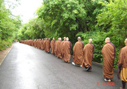

观音洞是锦州著名的风景区，原名普驼寺。位于锦州西北郊7公里。
景区包括东西 幡龙山、鸡冠山、观音洞山、平顶山、红石山、二郎洞山等，方圆7.26平方公里。观音洞山位于风景区中心。 观音洞位于一耸起的山峰之中，悬崖覆如棚状，下有东西两洞，两洞之间建有观音阁，阁前挺立着苍劲的古松，每逢雪后，银装素裹，素称“石棚松雪”，列为明代“锦州十二景”和清代“锦州八景”之首。 观音洞集奇洞、妙佛、圣泉、宝树于一体，是海内闻名、佛声远播的旅游胜地，也是辽宁五十佳景之一。景区西路有杏 花村、飞来泉、桃花洞、烽火台等景观。后山林木茂密，是夏季避暑胜地，观音洞风景区还建成一条观览索道。其风 景秀美，令人心旷神怡，若在旅游旺季观此胜地，定会令您不虚此行，携亲朋伴侣一起游览定会为您的亲情、友情、爱情永久留下定格一笔。
北普陀山占地面积27.26平方公里，距今已有1400多年历史，南望沧海，北望太极，紫气东来，福寿无边，它是观音菩萨在北方的显化道场，实为洞天福地，人间圣境。素有辽宁“第一洞天”关外“第一佛山”之称。 北普陀山绿色植物覆盖率达到95%以上，含氧量比城市高300倍，负氧离子含量是大中城市的3000倍。空气清洁、湿润，氧气充裕，又被称为天然的大氧吧。北普陀山风景区现已被评为国家AAAA级景区、省级风景名胜区；1997年被辽宁省政府评为“辽宁50佳景”之一。

北普陀山风景名胜区，分为九大景区50多个景点，集奇洞、妙佛、圣泉、宝树于一体， 北普陀山景区 北普陀山景区(7张) 包括东西幡龙山、鸡冠山、平顶山、红石山、观音洞山、二郎洞山等区域，有滴水观音、观音圣境、佛祖堂等景点。滴水观音是辽西地区最大的观音站像，其造像高达25米，洁白如玉，临风扬枝，尽撒圣水，人称“辽西第一大佛”；观音圣境是中国目前最大的观音文化展厅；石蓬松雪区圆通宝殿内供奉着千手千眼观音菩萨和神态各异的十八罗汉；佛祖堂内供奉着释迦牟尼佛、药师佛、阿弥陀佛；北普陀禅寺建于北魏年间，所供奉的佛像距今已有千余年的历史；北普陀禅寺法宝楼：供奉着缅甸玉佛释迦牟尼涅盘像和罕见的佛祖真舍利子，造像展现了佛祖80岁时在杪椤树林安禅入灭的造像，舍利子是尊贵的无价之宝；北普陀山禅寺的东侧是五百罗汉坡，五百罗汉形态各异、栩栩如生，共护佛祖，宛如众星捧月，一派西天极乐世界的庄严气氛。大德高僧维贤法师亲笔题字命名为“天下第一五百罗汉坡”。此外，还有供奉着中国民间膜拜的道教六十甲子神和三霄宫的元辰殿、记述国古代子女孝敬老人的故事的二十四孝画廊、摩崖景观福寿山等景点。 [2] 是历代皇帝、高僧、宗师及信众朝拜的圣地，文人墨客到此，也会赋诗吟联，留下不朽的题咏。所以，北普陀山的寺庙宝刹内都保存有许多珍贵的文物珍品，如《乾隆大藏经》，是中国仅有的十部之一。